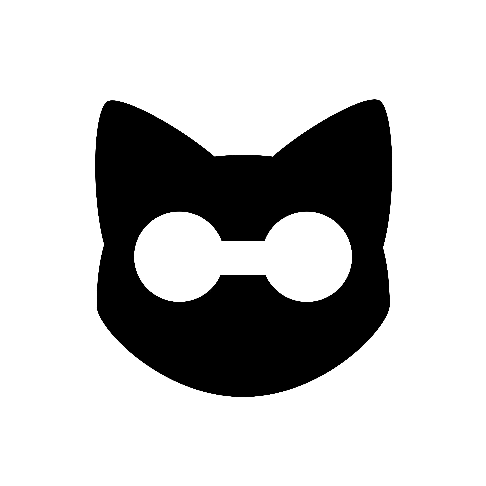
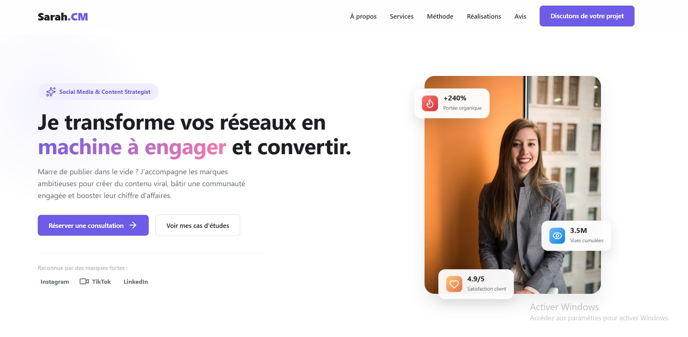

Tourisme

Mada Discovery — Site vitrine touristique
Une immersion visuelle et ergonomique conçue pour valoriser une destination, structurer l'offre et capter l'attention des voyageurs.

Catalogue des projets
Explorez l'ensemble des sites web, identités digitales et interfaces conçues sur mesure par Ga.B World pour ses clients et créateurs.
Une immersion visuelle et ergonomique conçue pour valoriser une destination, structurer l'offre et capter l'attention des voyageurs.

Une communication claire et incarnée pour inspirer confiance, valoriser l'univers du studio et convertir les visiteurs en clients.

Une vitrine dynamique orientée conversion avec chiffres clés animés, études de cas interactives et prise de contact fluide.
Un projet similaire en tête ?
Partagez-nous vos besoins, votre univers et vos objectifs en quelques minutes pour recevoir une proposition adaptée.